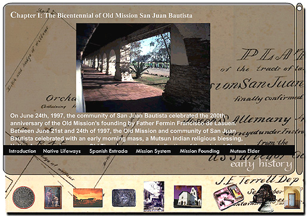

Screen 4: This portion of the CD-ROM provides a text
and image resource for the study of the "Early History" of San Juan Bautista.
Each section, including "Native Lifeways," "Spanish Entrada," "Mission
Systems," and a host of other topics is linked by both icons at the bottom
of the screen, and a text bar (in black) found within each major division
of the CD package. Users may scroll both text and images in each
section, or go to the "Mission Archives" icon to see slide shows and see
video and music.
Text, Photographs, and Multimedia
Copyright Ruben G. Mendoza, 2000
Back Main
Forward